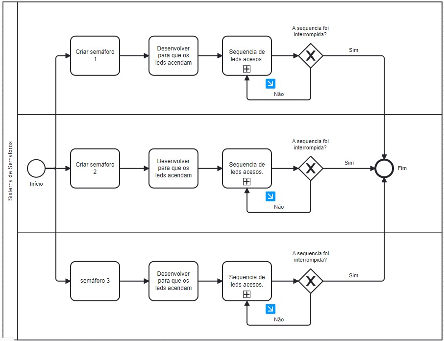

O Arduino é uma ferramenta versátil para aprender conceitos de eletrônica e programação, permite a criação de projetos interativos utilizado para fins educacionais e projetos de automação e robótica. Com uma placa programável e um ambiente de desenvolvimento, os usuários/alunos podem conectar sensores e atuadores para realizar ações baseadas em dados do ambiente.
O Tinkercad é um site que simplifica o aprendizado e a prototipagem de projetos com Arduino, ele oferece uma interface intuitiva e um excelente design para criar circuitos eletrônicos, programar o Arduino e simular o funcionamento antes de implementar fisicamente, assim permitindo uma abordagem prática e segura para o desenvolvimento de projetos eletrônicos.
Para realização do Diagrama BPMN (Business Process Model and Notation) utilizamos o site draw.io, que oferece uma ampla variedade de símbolos e recursos de formatação para representar fluxos, tarefas, eventos e decisões, uma plataforma muito prática.
Descrevemos uma atividade solicitada que envolvia um semáforo onde quando uma das luzes estivesse acesa as demais estariam apagadas, como na vida real. No diagrama seguimos o padrão dos métodos BPMN, onde no ínicio e fim utilizamos circulos, no processamento retângulos, losângos para dois caminhos e setas para ligamento dos procedimentos. Com o objetivo de concluir a tarefa com êxito e colaborar para o entendimento do avaliador, analisamos o código do arduíno e o descrevemos de forma simples na plataforma draw.io.
